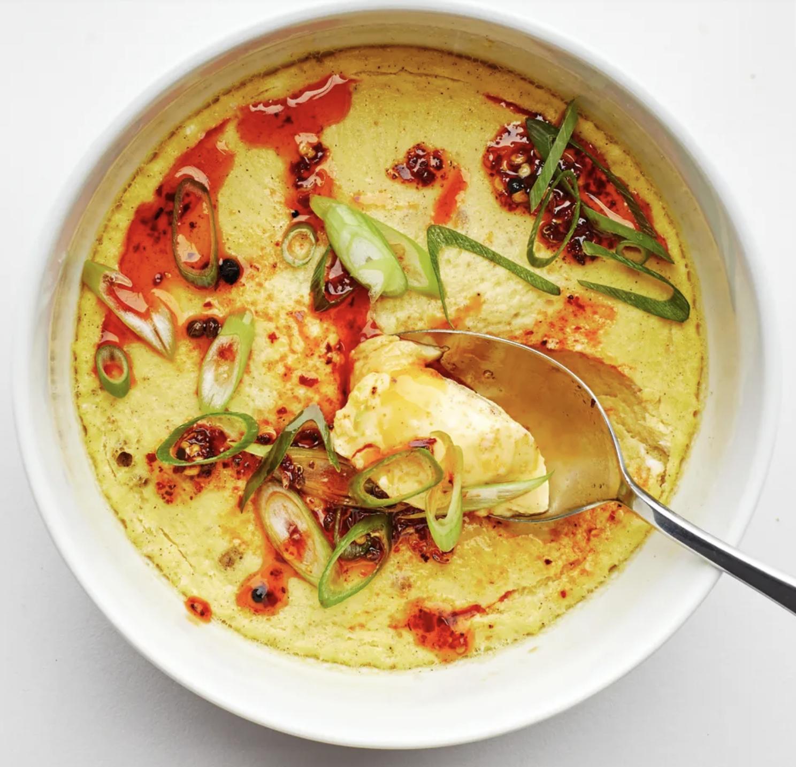

Steamed Eggs

Description
What are steamed eggs? As opposed to being an established dish of any specificity, steaming eggs is a homestyle Chinese method for cooking eggs.
Let's do it.
Ingredients
- Eggs
- Spring Onion
- Salt
- Finely Ground White Pepper
Steps
- Whisk eggs in a bowl with a splash of water
- Sprink with salt and pepper
- Place in steamer rack or inside rice cooker for five minutes until the eggs are the colour and texture of softened butter
Back to Home